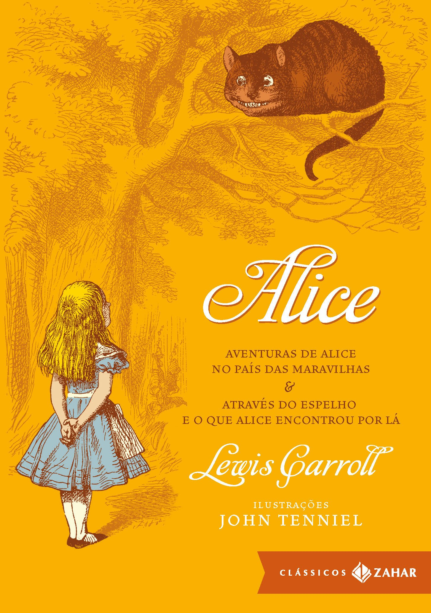

Estante de Livros
Sua biblioteca à um clique de distância
1. Harry Potter e a Pedra Filosofal

Sinopse
Harry Potter nunca tinha ouvido falar em Hogwarts até o momento em que as
CARTAS começam a aparecer no capacho do número 4 da rua dos Alfeneiros. Endereçadas com um LACRE
PÚRPURA, elas são rapidamente confiscadas por seus tios TERRÍVEIS. E então, no décimo primeiro aniversário de Harry, um homem
GIGANTESCO com olhos luzindo como besouros negros chamado RÚBEO HAGRID entra intempestivamente com uma notícia ASSOMBROSA:
Harry Potter é um bruxo e tem uma vaga na ESCOLA DE MAGIA E BRUXARIA DE HOGWARTS. Uma aventura inacreditável está para começar!
Fonte: Google Books
| Data da Primeira Publicação |
Autor |
Idioma Original |
Gêneros |
| 26 de junho de 1997 |
J.K. Rowling |
Inglês |
Romance, Literatura Infantil, Literatura, Fantástica, Alta Fantasia |
2. O Senhor dos Anéis: A Sociedade do Anel

Sinopse
A Sociedade do Anel O volume inicial de O Senhor dos Anéis, lançado
originalmente em julho de 1954, foi o primeiro grande épico de fantasia moderno, conquistando milhões de
leitores e se tornando o padrão de referência para todas as outras obras do gênero até hoje. A imaginação
prodigiosa de J.R.R. Tolkien e seu conhecimento profundo das antigas mitologias da Europa permitiram que ele
criasse um universo tão complexo e convincente quanto o mundo real.A Sociedade do Anel começa no Condado, a
região rural do oeste da Terra-média onde vivem os diminutos e pacatos hobbits. Bilbo Bolseiro, um dos raros
aventureiros desse povo, cujas peripécias foram contadas em O Hobbit, resolve ir embora do Condado e deixa
sua considerável herança nas mãos de seu jovem parente Frodo. O mais importante legado de Bilbo é o anel
mágico que costumava usar para se tornar invisível. No entanto, o mago Gandalf, companheiro de aventuras do
velho hobbit, revela a Frodo que o objeto é o Um Anel, a raiz do poder demoníaco de Sauron, o Senhor
Sombrio, que deseja escravizar todos os povos da Terra-média. A única maneira de eliminar a ameaça de Sauron
é destruir o Um Anel nas entranhas da própria montanha de fogo onde foi forjado. A revelação faz com que
Frodo e seus companheiros hobbits Sam, Merry e Pippin deixem a segurança do Condado e iniciem uma perigosa
jornada rumo ao leste. Ao lado de representantes dos outros Povos Livres que resistem ao Senhor Sombrio,
eles formam a Sociedade do Anel . Alguém uma vez disse que o mundo dos leitores de língua inglesa se divide
entre os que já leram O Senhor dos Anéis e os que um dia lerão o livro. Com esta nova tradução da obra, o
fascínio dessa aventura atemporal ficará ainda mais evidente para os leitores brasileiros, tanto os que já
conhecem a saga como os que estão prestes a descobrir seu encanto.
Fonte: Google Books
| Data da Primeira Publicação |
Autor |
Idioma Original |
Gêneros |
| 28 de julho de 1954 |
J.R.R. Tolkien |
Inglês |
Literatura Fantástica |
3. Percy Jackson e o Ladrão de Raios

Sinopse
Primeiro volume da saga Percy Jackson e os olimpianos , O ladrão de raios esteve
entre os primeiros lugares na lista das séries mais vendidas do The New York Times. O autor conjuga lendas
da mitologia grega com aventuras no século XXI. Nelas, os deuses do Olimpo continuam vivos, ainda se
apaixonam por mortais e geram filhos metade deuses, metade humanos, como os heróis da Grécia antiga.
Marcados pelo destino, eles dificilmente passam da adolescência. Poucos conseguem descobrir sua identidade.
O garoto-problema Percy Jackson é um deles. Tem experiências estranhas em que deuses e monstros mitológicos
parecem saltar das páginas dos livros direto para a sua vida. Pior que isso: algumas dessas criaturas estão
bastante irritadas. Um artefato precioso foi roubado do Monte Olimpo e Percy é o principal suspeito. Para
restaurar a paz, ele e seus amigos – jovens heróis modernos – terão de fazer mais do que capturar o
verdadeiro ladrão: precisam elucidar uma traição mais ameaçadora que fúria dos deuses.
Fonte: Google Books
| Data da Primeira Publicação |
Autor |
Idioma Original |
Gêneros |
| 28 de junho de 2005 |
Rick Riordan |
Inglês |
Mitologia Grega, Romance, Ficção
Juvenil |
4. Alice no País das Maravilhas

Sinopse
Há mais de 150 anos, a inocência e a curiosidade de uma pequena garota inglesa
transformaram-se em um dos maiores clássicos da literatura infantojuvenil. Alice no País das Maravilhas
conta a história de uma menina que, ao avistar um Coelho vestindo relógio e colete, sem hesitar, entra, às
pressas, dentro do esconderijo do novo amigo. Ao cair na profunda toca, em seu trajeto pela terra das
fantasias, Alice conhece o Chapeleiro Maluco, a Rainha de Copas, o Gato de Cheshire, a Lagarta e diversos
outros personagens que lhe possibilitam viver experiências únicas que se confundem entre o real e o
imaginário. Nesse universo, ao diminuir e aumentar de tamanho, a garota desenvolve o exercício da empatia,
cria um grande laço de amizade com um personagem considerado louco, aprende a conviver com as diferenças,
bem como a vencer os seus próprios medos ao enfrentar a Rainha de Copas. Com isso tudo, aprende grandes
lições sobre a vida, o que torna a leitura do livro instigante. E ainda mais apaixonante, devido às
múltiplas possibilidades de interpretação de cada uma das aventuras eternizadas por Alice.
Fonte: Google Books
| Data da Primeira Publicação |
Autor |
Idioma Original |
Gêneros |
| Novembro de 1865 |
Lewis Carroll |
Inglês |
Literatura infantil, Literatura
fantástica,
Literatura nonsense |
5. O Guia do Mochileiro das Galáxias

Sinopse
Considerado um dos maiores clássicos da literatura de ficção científica, O Guia
do Mochileiro das Galáxias vem encantando gerações de leitores ao redor do mundo com seu humor afiado.
Este é o primeiro título da famosa série escrita por Douglas Adams, que conta as aventuras espaciais do
inglês Arthur Dent e de seu amigo Ford Prefect.
A dupla escapa da destruição da Terra pegando carona numa nave alienígena, graças aos conhecimentos de
Prefect, um E.T. que vivia disfarçado de ator desempregado enquanto fazia pesquisa de campo para a nova
edição do Guia do Mochileiro das Galáxias , o melhor guia de viagens interplanetário.
Mestre da sátira, Douglas Adams cria personagens inesquecíveis e situações mirabolantes para debochar da
burocracia, dos políticos, da "alta cultura" e de diversas instituições atuais. Seu livro, que trata em
última instância da busca do sentido da vida, não só diverte como também faz pensar.
Fonte: Google Books
| Data da Primeira Publicação |
Autor |
Idioma Original |
Gêneros |
| 12 de outubro de 1979 |
Douglas Adams |
Inglês |
Ficção Científica, Romance, Humor,
Ficção
Científica Cômica |